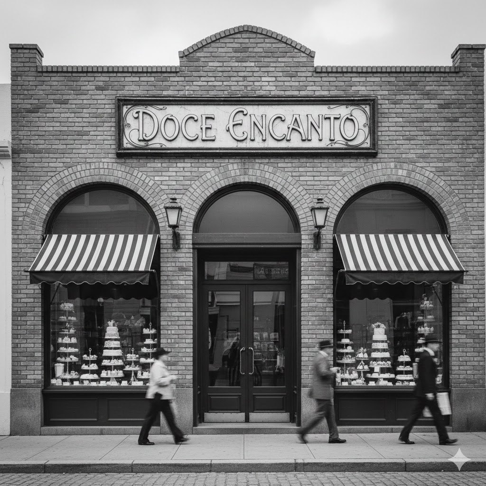
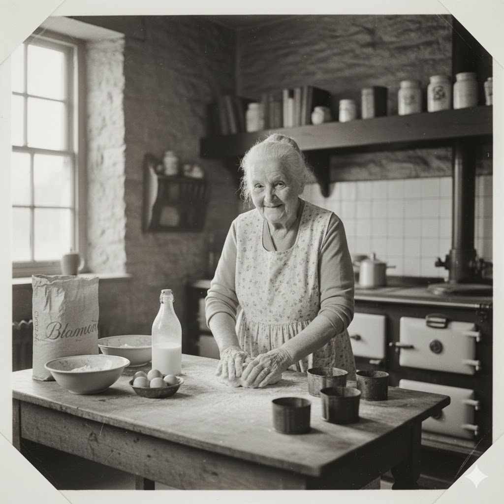
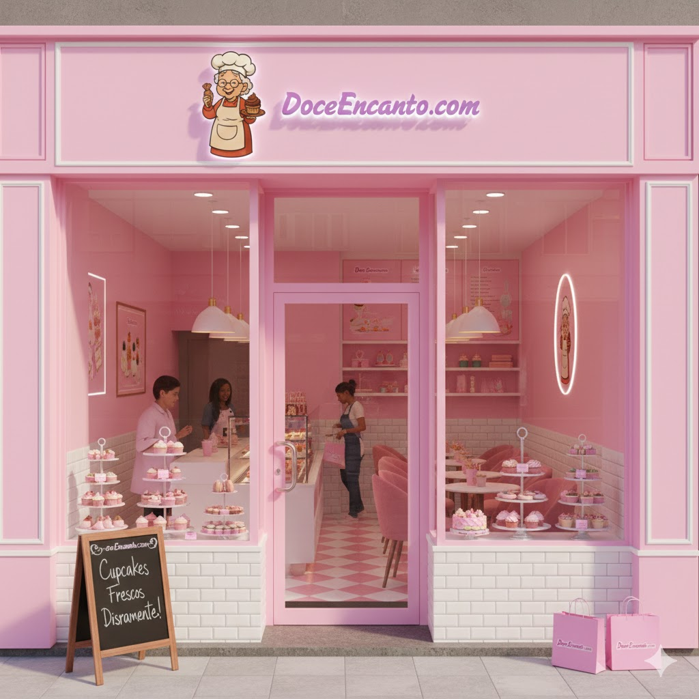
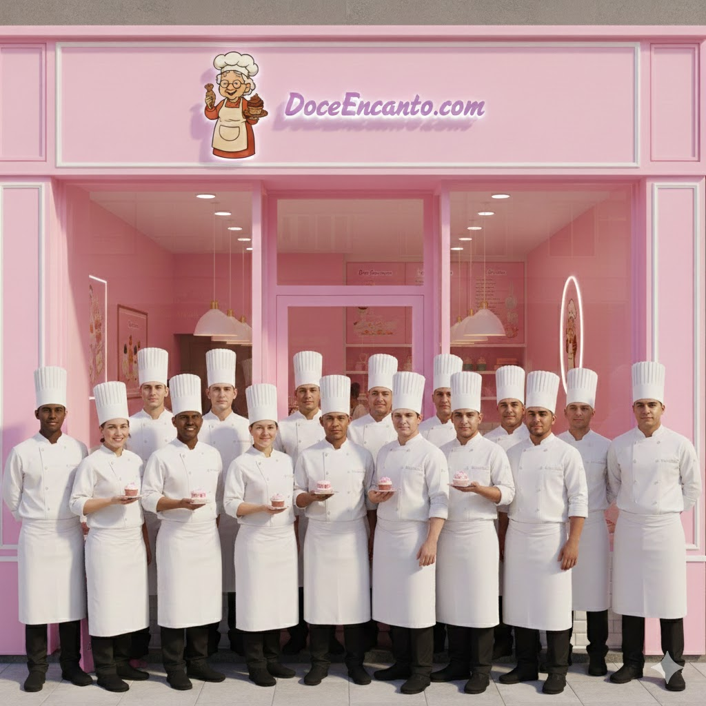

A Doce Encanto nasceu de um sonho acalentado por Ana desde a infância em 1923, Osasco.


Quando observava sua avó transformar frutas maduras e açúcar em compotas brilhantes e bolos reconfortantes.
Anos depois, buscando resgatar essa magia e compartilhar o sabor das lembranças, Ana investiu suas economias em um pequeno espaço no centro, onde o aroma nostálgico de canela e baunilha logo começou a atrair curiosos e apaixonados por doçura, transformando a singela loja em um ponto de encontro onde cada criação era um tributo ao afeto e à tradição familiar, adoçando a vida de cada cliente que cruzava sua porta.


Hoje, somos 5 lojas em diversas idades, Osasco, São Paulo, Salvador, Rio de Janeiro e Bauneário Camboriú